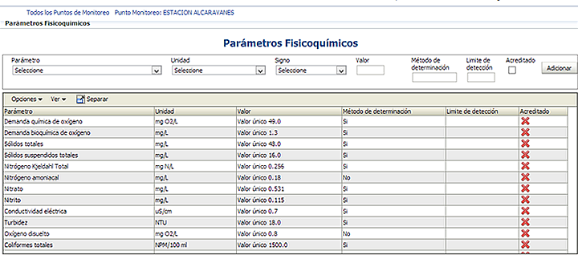

Este formulario le permite registrar los resultados del análisis de los diferentes parametros fisicoquímicos. Seleccione el parámetro de su interés, la unidad de medida, el signo(<, >, rango, valor único, o valor tipo de caracter), valor obtenido, Método de determinación, Limite de detección, indique si el laboratorio que realizó el análisis es acreditado y de clic en el botón Adicionar .
